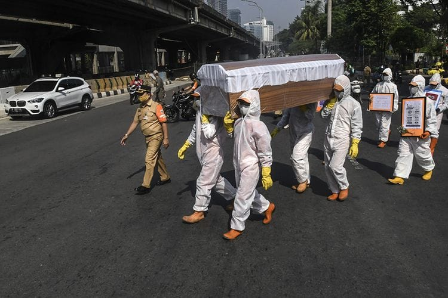
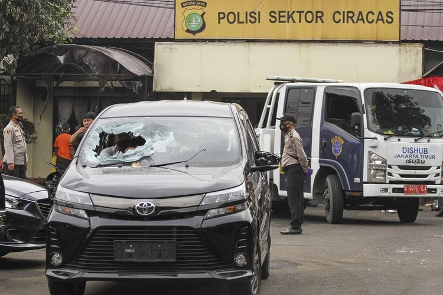
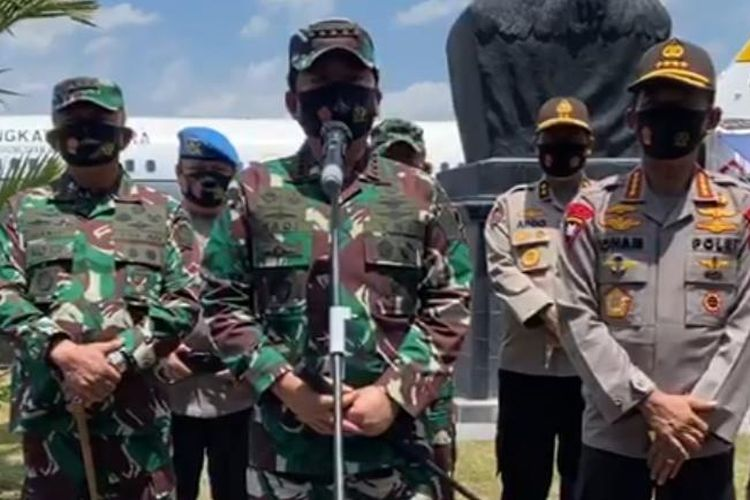
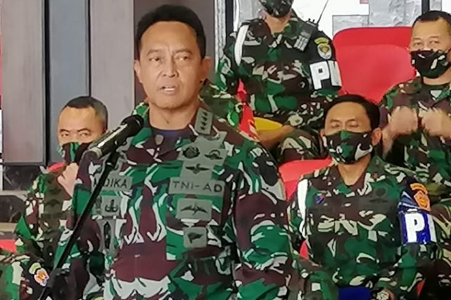

Penyerangan Mapolsek Ciracas dan Mudahnya Prajurit termakan Hoaks
Penulis : Wisnu NugrohoKompas.com - Senin, 7 September 2020 | 09:59 WIB

Editor : Heru Margianto
Hai, apa kabarmu? Agustus yang banyak tanggal merah ditambah cuti bersama baru saja
kita lalui. Menyenangkan punya banyak hari libur. Mungkin itu yang kamu rasakan.
Namun, dampak dari banyaknya hari libur itu juga mengkahwatirkan. Salah satunya
melonjaknya temuan pasien positif Covid-19.
Ada korelasi antara libur panjang dan lonjakan jumlah kasus positif Covid-19. Rekor
baru jumlah kasus per hari pecah kira-kira setelah rangkaian tanggal merah yang
ditambah cuti bersama.
Sabtu, 29 Agustus 2020, berdasarkan data pemerintah yang masuk hingga pukul 12.00 WIB,
tercatat ada penambahan 3.308 pasien positif Covid-19 dalam 24 jam dan membuat jumlah
kasus pasien positif Covid-19 di Indonesia mencapai 169.195 orang.
Ini merupakan penambahan paling tinggi sejak kasus pertama Covid-19 diumumkan Presiden
Joko Widodo pada 2 Maret lalu.
Rekor sebelumnya terjadi Rabu (27/8/2020) dengan 2.719 pasien tambahan dan pada 9 Juli
2020, dengan 2.657. Rekor-rekor itu terjadi salah satunya karena ada rangkaian tanggal
merah atau libur nasional sebelumnya.
Bukan salah tanggal merah atau libur nasional sehinga rekor kasus positif terus pecah,
tetapi disiplin kita yang beraktivitas lebih saat tanggal merah atau libur nasional.

Di banyak tempat umum, masih kita jumpai orang tidak memakai masker. Jika memakai
masker, cara pakainya keliru. Pedoman menjaga jarak juga kerap diabaikan.
Tempat cuci tangan dengan sabun yang sebelumnya banyak disediakan di tempat-tempat
terjadinya kerumunan tidak lagi bisa digunakan karena tidak ada air atau sabun cuci
tangan.
Intinya, kendornya disiplin kita, bukan tanggal merah, libur nasional atau cuti bersama
penyebab pecahnya rekor. Pelonggaran kegiatan tidak dibarengi ketatnya penerapan
protokol kesehatan tetapi sebaliknya.
Kita sedang menuai penen dari apa yang kita tanam. Saya baharap, kamu tidak ikut-
ikutan menanam hal-hal buruk bagi kesehatan dengan tidak disiplin menerapkan protokol
kesehatan.
Betul bahwa ada kabar baik dengan meningkatnya pasien sembuh. Pada periode yang sama,
didapati penambahan 1.902 pasien Covid-19 yang sembuh dalam sehari.
Tambahan ini membuat total pasien Covid-19 yang sembuh dan tidak lagi terinfeksi virus
corona mencapai 122.802 orang.
Angka ini sekaligus menunjukkan bahwa masih ada 46.393 kasus positif Covid-19 yang
masih dirawat. Pada periode 28-29 Agustus 2020, 92 pasien Covid-19 meninggal dunia dan
menambah jumlah angka kematian akibat Covid-19 di Indonesia mencapai 7.261 orang.
September sedang kita masuki. Kesadaran akan tingginya angka penularan Covid-19 ini
semoga membuat kita lebih disiplin lagi dengan protokol kesehatan. Kita bisa berkontribusi
baik untuk memutus rantai penyebaran.
Oya, seminggu kemarin, selain rekor penambahan jumlah kasus positif Covid-19 dalam
sahari, ada rekor baru juga yang perlu kamu ketahui. Sama seperti rekor Covid-19, rekor
ini juga bukan hal baik. Dari hal tidak baik ini semoga kita bisa memetik pelajarannya.

Apa rekor itu? Dalam dua tahun, Markas Kepolisian Sektor Ciracas, Jakarta Timur diserang
gerombolan orang yang kemudian diketahui sama latar belakangnya yaitu tentara.
Penyerangan pertama terjadi pada pergantian hari hingga dini hari pada 12 Desember 2018.
Penyerangan kedua terjadi pada pergantian hari hingga dini hari pada 29 Agustus 2020 atau
Sabtu dini hari lalu.
Meskipun tidak saling berhubungan langsung, ada korelasi antara penyerangan pertama
dan kedua karena sama-sama bermula dari titik berangkat yang sama.
Penyerangan pertama Desember 2018 dilakukan ratusan orang yang kemudian diketahui
anggota TNI-AD berawal dari cekcok di kawasan pertigaan Arundina di wilayah Polsek
Ciracas. Cekcok terjadi antara Kapten Komaruddin, anggota TNI AL dengan tukang parkir.
Cekcok itu dilerai oleh Pratu Rivonanda. Tetapi, Rivonanda justru dikeroyok juru parkir.
Atas pengeroyokan itu, satu juru parkir ditahan di Polsek Ciracas dan kedua pihak lalu
berdamai.
Akan tetapi, penyelesain kasus ini tidak diterima teman-teman Rivonandi.
Untuk memastikan apa benar pelaku pengeroyokan sudah ditahan, puluhan orang yang
kemudian diketahui anggota TNI mendatangi Mapolsek Ciracas.
Ada 17 kendaraan rusak karena peristiwa ini. Dipastikan lima pengeroyok Pratu Rivonanda
ditahan di Mapolsek Ciracas. Namun, penegakan hukum untuk perusakan di Mapolsek Ciracas
tidak ada titik terang.
Kasus perusakan pada Desember 2018 itu seperti menguap begitu saja sampai terjadi
penyerangan kedua Sabtu dini hari lalu.

Belajar dari kasus penyerangan pertama, kasus penyangan kedua ditindaklanjuti segera.
Tidak cukup level Polsek atau Kodim, bahkan Panglima TNI Marsekal Hadi Tjahjanto turun
langsung membuat pernyataan tegas yang melegakan.
Penyerangan kedua terhadap Mapolsek Ciracas dipicu oleh kabar bohong atau hoaks yang
dikarang Prada MI. Kecelakaan tunggal yang dialami prajurit dalam kepangkatan paling
bawah di TNI ini dikarang sebagaia akibat dari pengeroyokan di sekitar Arundina.
Kepada atasannya, Prada IM mengaku kecelakaan tunggal. Kepada teman-temannya berjumlah
27 orang via pesan elektronik, Prada IM mengarang cerita dikeroyok.
Teman-teman Prada IM, tanpa menguji informasi, tanpa sikap kritis, tersulut emosi
melihat temannya babak belur. Ada perbedaan mencolok antara babak belur kecalakaan
tunggal dengan dikeroyok.
Berbekal informasi bohong yang tidak diuji dan diyakini benar, puluhan orang yang
adalah anggota TNI-AD lalu menyerang Mapolsek Ciracas pada dini hari akhir pekan lalu.
Dua mobil yang parkir di Mapolsek Ciracas rusak dan dibakar. Satu kendaraan operasional
dan satu bus Polri rusak. Dua orang polisi terluka. Beberap toko di sekitar Mapolsek
Ciracas juga dirusak.
Berbeda denga perusakan pertama, perusakan kedua ini direspons cepat dan tepat meskipun
awalnya berusaha ditutup-tutupi.
Kepala Staf TNI AD Jenderal Andika Perkasa turun langsung ke lapangan dan membuat
pernyataan. Peristiwa penyerangan oleh anggota TNI-AD meresahkan, memalukan dan
merugikan nama baik TNI-AD.
Sebanyak 31 prajurit TNI-AD diperika dan kemudian ditahan di rumah tahanan Pomdam
dan rumah tahanan TNI. Terhadap Prada MI yang masih luka karena kecelakaan tunggal
juga sudah diperiksa.
Ancaman pemecatan sudah disampaikan. Tidak hanya pemecatan, prajurit yang melakukan
perusakan diminta mengganti seluruh biaya kerusakan dan pengobatan mereka yang
terluka akibat kekerasan yang dilakukan.
Tegas, keras, dan menjerakan. Respons cepat dan tepat ini juga menjadi pembelajaran.
Respons ini berbeda dengan kasus penyerangan pertama yang menguap sehingga
memunculkan kekerasan kedua dengan pelaku dan korban adalah insitusi yang sama.
Tepat sekali apa yang dikatakan Adika Perkasa bahwa kasus ini memalukan. Karena
kabar bohong yang dikarang Prada MI dan menyulut emosi puluhan teman-temannya
sesama tentara, nama baik TNI-AD dirugikan.

Di era banjir informasi seperti saat ini, siapa pun dia bisa membuat informasi seperti
dilakukan Prada IM. Banjir membawa banyak sampah, begitu juga banjir informasi. Kabar
bohong, berita palsu, hoaks adalah wujud nyatanya.
Sampah informasi itu berbahaya jika dikonsumi dan diyakini kebenarannya. Prada IM
dan teman-temannya sesama tentara sudah membuktikan.
Akibatnya fatal. Tidak hanya untuk mereka, tetapi untuk orang lain juga.
Oya, Kamis lalu, bersamaan dengan dimulainya tahun ajaran baru dan perkuliahan,
saya mulai mengajar. Mata kuliah yang saya ampu adalah "Menulis Berita".
Di awal kuliah saya selalu menekankan pentingnya sikap kritis, skeptis kepada
mahasiswa fakultas ilmu komunikasi. Sikap ini mengajarkan untuk tidak mudah percaya
atau meragu-ragu atas semua informasi untuk diuji kebenarannya sebelum menulis berita.
Kasus Prada MI ini menegaskan lagi pentingnya sikap ini. Tidak hanya untuk penulisan
berita, tetapi juga dalam keseharian kita yang makin hari makin dibanjiri informasi.
Layaknya banjir yang banyak membawa sampah, begitu juga banjir informasi. Banyak
sampah dibawa serta banjir itu, bukan informasi.
Karena itu, benar perkataan, "Jangan mudah percaya dengan apa yang kamu lihat di
internet hanya karena ada foto dan kutipan di sebelahnya."
Tentu saja, bukan Presiden pertama RI Soekarno yang menyatakan kebenaran itu. Sikap
skeptis membuat kita mengambil kesimpulan ini sebelum gegabah mengambil tindakan
atasnya.
Salam skeptis.
Wisnu Nugroho